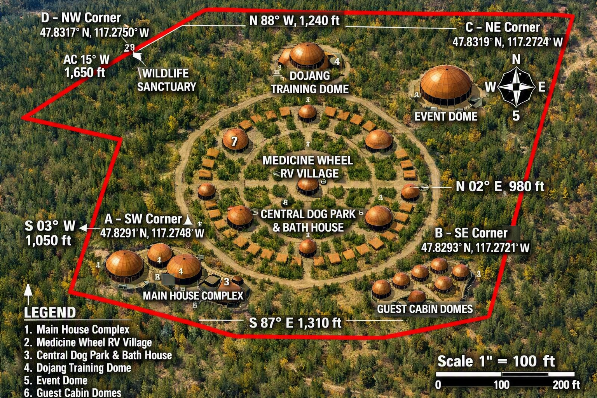

NDE Sovereign
 Life Collective
Life Collective
Life Collective
Life Collective
Explore the future vision of the NDE RV Park and Wellness Center, including conservation initiatives, wellness facilities, lodging, community spaces, martial arts training areas, and sustainable development concepts.

This concept outlines a phased approach to growth that incorporates wellness, outdoor recreation, RV lodging, camping, administration facilities, and cultural spaces.

Inspired by traditional circular design principles, this concept emphasizes balance, wellness, community gathering, recreation, and nature-focused living.

The long-term vision combines conservation, recreation, wellness programming, cultural education, lodging, family activities, and environmental stewardship into a destination unlike any other in the Pacific Northwest.